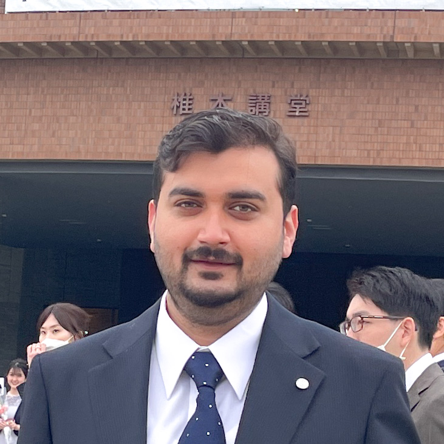

Assistant Professor
School of Mechanical and Materials Engineering
Indian Institute of Technology Mandi
Principal Investigator, Multiscale Thermal Engineering Laboratory (MTEL)
Thermal Management • Electronics Cooling • Battery Thermal Management • Microchannels • Hydrogen • Nanobubbles
Our Team Join the Lab
The Multiscale Thermal Engineering Laboratory (MTEL) at the Indian Institute of Technology Mandi conducts fundamental and applied research in thermal-fluid sciences to address challenges in next-generation energy systems, electronics, and sustainable technologies. Our research integrates experiments and computational modelling to develop innovative thermal management solutions for AI hardware, power electronics, electric vehicle batteries, and hydrogen energy systems. We also investigate microscale transport phenomena, nanobubbles, and bio-inspired thermal systems to improve energy efficiency and sustainability. We welcome motivated students and collaborators who are passionate about advancing thermal engineering through interdisciplinary research.
Cooling for AI chips, servers and power electronics.
Immersion cooling and EV battery systems.
Bio-inspired, multi-layered and manifold microchannels.
Transport phenomena and imaging.
Heat transfer for water and energy.
Email: sarthak[at]iitmandi[dot]ac[dot]in
School of Mechanical and Materials Engineering
Indian Institute of Technology Mandi